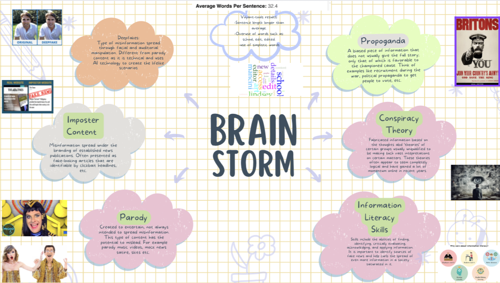

Week 5 tasks
Independant Learning tasks
Task 1
Evaluating Resources
Website chosen for evaluation: "Yale School of Art Website"
I have used this particular website as an example in previous activities because of its interesting interface. In relation to use of text, however, I would argue that the website as a whole lacks writing quality. There are some aspects of the website that use text well that will be further explored, however my main focus is on the websites poor use of text that act as a learning curve in relation to bad web design and things that I will avoid in the creation of my website. While the website at its most basic function is to provide information for students of the school, there are some aspects of the website that I can use to tie into the content of my website as well. This, however, is not the reason I am choosing to focus on this particular website- my focus stems from an objective point of view in the websites (poor) use of text.
- Accuracy: The Yale School of Art's website, as previously stated, is there to provide information for students, and in this respect it does. The school maintains the accuracy of the information on their website, stating that: "the information on this website is as reliable as that on any website…" (Mancini 2023). This is supported by other information on the website that states only those with a Yale ID can access site editing, and even at that, not all with an ID can access editing facilities when it comes to things like course descriptions, etc. So for this reason, the information provided on the website does maintain accuracy as a whole. However, due to the website functioning as a collaborative wiki, and like any website that is open to collaboration, there is still a risk that some elements of information will not maintain a full level of accuracy. This can be tied into my website topic about the circulation of fake news and the importance of information literacy skills as these types of skills would come in handy when navigating a collaborative website such as the Yale School of Art's website.
- Active Voice: Due to the website functioning as a collaborative wiki, there are examples of both the use of active voice and passive. Thus, it is difficult to come to a final conclusion on the topic of this writing characteristic because of the many literal voices there is that can access the editing of the website.
- Limit Biases: The collaborative nature of the website allows for the erasure of limit biases on a general basis as so many people (so long as they have a Yale ID to access) can access and contribute to the contents of the website. Thus, this allows for the creation of a more open, diverse and free-flowing environment that offers many different outlooks and perspectives rather than being constricted by the plains of singular authorship that may contain some limit biases, consciously or not. This is one of the things that the website does do well in relation to text, as it aids in creating a more inclusive space for all types of users via the mode of text. Having said this, however, the only limit bias immediately visible to me is a language bias. The contents of the website are written in English, and if there is an option to change the language of the website then it is not clearly visible and hard to find. Thus, this poses and immediate challenge for users who do not speak English.
- Clarity: The website does not contain a lot of technical jargon, thus for the information provided on the website there is an element of clarity. Due to the website being an open space, the use of language and clarity that comes a long with it is very inclusive- there is something that caters to everyone.
- Conciseness: In relation to the above point, the content of the website is not very 'wordy'. However, where the lack of 'wordiness' may adhere to the reader and hold their attention, attention is drawn to the surroundings of the text which are flamboyant and over the top.
- Conversational and smoothly flowing prose: Like the use of active voice, as a whole this is a more difficult characterisation to judge because of the diversity of language use on the website. There are some elements of the website that’s use of prose is done well and others where it is not; it is subjective to the creator, and in this example there are many. Furthering this, the where the websites use of prose does not flow smoothly, it is for the reason that it is a collaborative space; every editor has a different writing style, thus bringing these together does not allow for a seamless flow in comparison to a website created and edited by an individual.
- Correctness: The information on the home page has an air of correctness, in grammar and tone, etc. However, when going further into the website, where other collaborators have edited content, it is easy to spot elements of poor grammar and correctness. It is incredibly difficult to police the use of textual elements like grammar on a collaborative space like this. Thus, this is a potential elements that contributed to the poor textual make-up of the website.
- Parallelism: The website does not contain an immediate amount of parallelism. Given that parallelism as technique adheres to our desire for symmetry, the lack of it fits in with the lack of symmetry the websites design displays as a whole.
- Positive voice: The website does not contain a lot of negative words, thus use of positive voice is something that is does do well. For example, when referring to deadlines, the dates are simply stated, they are not convoluted by negative and harsh words, they simply state a date and time which makes it less intimidating for users seeking such information.
- Strong nouns and verbs: For being a collaborative space, the website does use nouns and verbs well. There is no overuse of each, and instead- particularly for the parts of the website that are managed by faculty- the use of nouns and verbs are very carefully curated in an intelligent way that makes the content both informative and intriguing. In this sense, the website does maintain a kind of professionalism when it comes to laying out important pieces of information.
- Sentence variety: Sentence length in particular on the website seems to be of the long variety; it is not very varied. As a whole, sentence starters are varied, however there are slip-ups and the most common are sentences starting with 'It' ,'It is' and 'The'. Also words like 'would' and 'to' are very frequently used.
- Simple words: The collaborative nature of the website, as before stated, creates a more diverse and open space that is inclusive of users. Thus, the use of language does not tend to be over complicated and maintains elements of accessibility that are important in the relaying of information.
- Shorter paragraphs: The contents of the website do seem to be in the medium to longer length paragraphs. The paragraphs are not so long that it is difficult to keep focus- with the exception of a few- however, some shorter paragraphs of information would make the website more accessible to a wider variety of users.
- Tone and voice: Tone of voice throughout the website is very varied. A formal tone of voice is used when relaying information about the school, courses , etc (these parts of the website that are only edited by faculty members), thus an air of professionalism is maintained in these parts, as would be expected of an educational institution. However, there are also elements of the website that employ a very informal tone of voice. For example, when student collaborators are advertising an event, etc on the website. An example of this is the use of 'Hey everyone!", that I have seen used on the website in relation to advertising certain events. This, however, I would argue is appropriate for the setting as the informal tone of voice makes it sound like a personal invitation; it creates an element of warmth and inclusivity that a more formal tone of voice would not have in relation to certain things, such as event invites. As a user, an individual is more likely to have a positive response to 'Hey everyone!', than 'Dear All".
Task 2
Reflective Statement
I feel as though I am prepared to discuss my topic and feel confident in the steps I have taken thus far. I have a clearly defined audience that I have set out in previous tasks that I am continuing to collect information on. I am confident in my choice of audience in regard to my topic as it is one that can be held in close regard to the vast majority of my chosen audience who are regular users of the web. My purpose in choosing my topic has also been clearly defined; in previous tasks I outlined the reasons why I believe that the development of information literacy skills is ever more prevalent in an age of fake news, especially to the younger generation of web users that are my main target audience. I believe I have enough persuasive arguments to set out in favour of the wide scale adoption of information literacy skills, as these skills would benefit my target audience not only in aiding their web habits and helping recognise fake news, but also in daily like where these skills can be applied. I think I need to do a little more work in conducting research on a more personal scale; my research thus far has been generalised, whereas I think my topic and my arguments as a whole would be immensely benefitted from conducting other methods of research such as personal interviews with those who are within range of my target audience. My project, although outlined in depth, could benefit from more organisation. However, more organisation will come with the more research I do, in particular the research I have mentioned beforehand.
Lab Tasks
Task 1
Part 1
For this lab I used the Yale School of Art Website in concurrence with the analysis I carried out in this weeks independent learning task. URL: "Yale School of Art Website"
Using Voyant-tools I found the following...
High-frequency words include words such as 'school', 'edit', 'edited', 'yale', 'community', 'events', 'student'. The use of these words indicate that the website is catered to students of the Yale community, and those who are part of the school. The use of words such as 'editor' and 'edited' also alludes to the fact that the website operates as a collaborative space for students and faculty of the school.
For referecne:

Image displays high frequency words on the website
- • Sentence length averages at around 32.4 words per sentence. This leans towards the longer side in regard to sentence length. This suggests it may be difficult for users to engage with the content on the website due to the sentence length being long; it may not hold user attention.

Image displays readability of the website
- Through voyant-tools, I found the frequent use of simplistic words, such as provided in the image.

Image displays frequent use of simplistic words on website
Part 2
- In my independent learning task I discussed the foundation of the website being mainly for students and members of the Yale School of Art's community. This was confirmed through my voyant-tools search when looking at high frequency words, such as the ones outlined in task 1. Also, when discussing the accuracy writing characteristic in my independent learning, I explored how the website is set up to be a collaborative space which may have an impact on the accuracy of the information on the website. This was also confirmed on my voyant-tools search due to the high frequency of words such as 'edited'.
- When discussing sentence variety in my independent learning I discussed how when using the website I felt as though the sentences tended to be very long as they struggled to keep my attention in parts. Through my use of voyant-tools, I found that the average sentence length was 32.4 which is longer than the average sentence.
- In discussing sentence variety and simple words characteristics I mentioned the-sometimes- overuse of words such as 'the' and 'would'. I have provided an image in the above section of my voyant-tools search to confirm that these qualities I picked up on turned out to be correct.
Task 2
Narrative point: The Circulation of Fake News on the Web.
Fake News surrounds us all; it creates a sort of post-truth society that is both dangerous but enticing to the unaware.
The circulation of fake news on the web has become an ever prevalent issue that continues to develop in modern society. Fake news comes in many different forms, with varying degrees of extremity- something that Duffy, Tandoc and Ling refer to as consisting of "two dimensions" of which are "the intention to deceive and the level of facticity" (Duffy, Ling and Tandoc 2019:2).In reference to the 'dimensions' of fake news set out by Duffy, Tandoc and Ling, these forms of fake news can range from mere satire/parody that in intent are harmless and do not claim to be factual but can often be misconstrued to defer other meanings, to the deeply harmful and dangerous circulation of deepfakes and imposter content that are intended to manipulate the user. However, the one thing all fake news does have in common is that it is enticing to the user and is often intended to shock- the employment of clickbait images and emboldened, hyperbolised headlines immediately catch the eye, and as a result gain more and more traction.
The continued traction fake news gains on the web creates a dangerous space for users online. Fake news can be alluring to those who are unaware of its potential impact. Thus, the spread of fake news can lead to the wide-spread belief in false narratives, scaremongering and can also have an impact on peoples daily and professional lives. Through sharing a source of low credibility, the implication is then that the user behind it believes in the falsified claims, which can have an impact on future employment, etc . In further argument about how damming the impact the spread of fake news can have on peoples daily lives, we can look to the events of the COVID-19 pandemic and how damaging the cycle of misinformation was on many peoples mental health; the conspiracy theories, the scaremongering surrounding the vaccine through media outlets led to public fear on a phenomenal level. This highlights the hold that fake news has over society and how deeply imbedded it remains. In many ways, fake news acted as plague of the mind, where COVID remained a plague of the body; the notable difference being we have found a cure for the latter, but not the former.
In conclusion, fake news continues to spread via the web at such a rate it seems near impossible to eradicate it. However, eradicate such a viscous cycle we may not, but we can educate on ways to minimise the impact it has on society and our lives.
Narrative point: Aspects of information literacy
Information literacy skills are a crucial development need required by a modern society of web users in order to utilise the full benefit of the richness web resources offer us.
Information literacy refers to the ability to think critically and aide in the consumption of information in order to make informed judgements and decisions. Information literacy skills can empower people- no matter their background- to be confident in the way the interpret information. These sort of skills give us the ability to recognise when information is needed and how to then use that information in the most effective way.
Information literacy skills play an imperative part in our ability to respond to and digest different sources of information. Skill sets such as the ability to identify, evaluate, acknowledge and apply all make up the key components of what it means to be information literate. Thus, the strength of each of these skills help us determine how we use the sources of information that are given to us, regardless of form or credibility. The development of information literacy skills are useful not only in the scope of the web, but they can also be applied to many other aspects of daily life. For example, we may use information literacy skills when applying and searching for a new job, when we are buying a house, even down to analysing what new pair of shoes we would like to buy. This shows how important and how prevalent the use of information literacy skills are, and it can be argued that the more we develop our information literacy skills, the more informed decisions we can make.
In conclusion, information literacy skills are invaluable in current society. These skills provide all the means necessary to thrive in an age of a sea of information and wade through the influx to find the most valuable and effective uses of information to aide us on the web, in a professional capacity and in the most basic domestic capacity.
Reflection
Both of these examples would provide useful and beneficial for a multimedia website as they set out both a clear context and argument for each narrative point. Each of these examples reflect clarity and accuracy on each point, having been well researched. Each point smoothly flows and would provide users with a clear understanding of the topic at hand. However, there are instances in each example where I feel sentence variety lacks; sentences tend to run longer than average, thus I can appreciate that this may be a point of contention in holding user attention. Each example also projects a more formal tone, which is good for the educational purposes intended- however maybe the incorporation of a more conversational/less formal tone would also be beneficial in regard to feeling more relatable and inclusive for my projected audience.
When discussing my examples with a 20 year old female who falls into my target audience, I was reassured that the information provided is both clear and captivating, while also remaining useful and relevant to todays society. My interviewee did, however, mention how the deployment of more example of particularly information literacy in use in things that have really happened would further add to my argument about the imperative need for the development of information literacy skills.
My updated moodboard:

Image shows a moodboard of my creative process